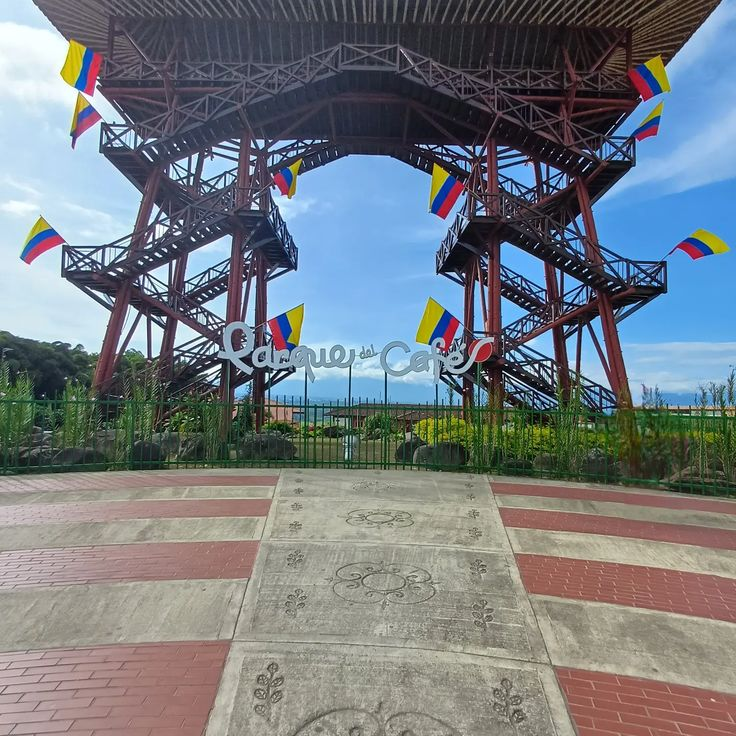
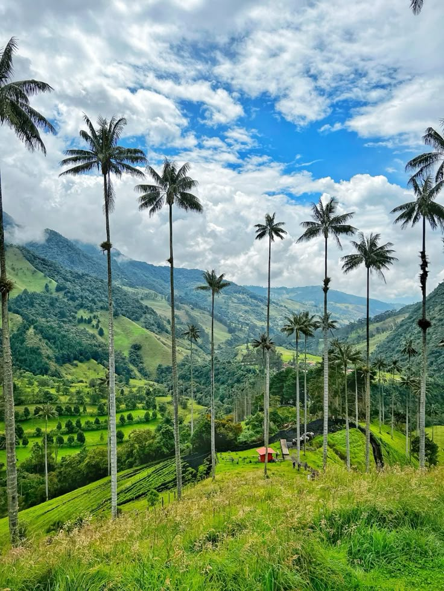
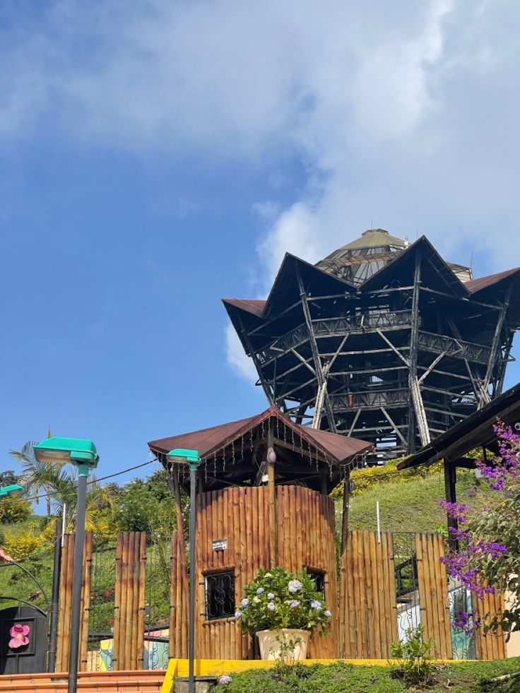
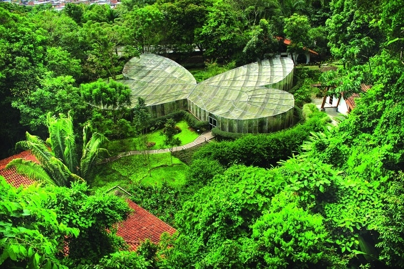

Descubre Quindío
El Quindío, en pleno Eje Cafetero de Colombia, es un destino turístico famoso por sus paisajes verdes, la calidez de su gente y la cultura cafetera que lo identifica. Sus encantadores pueblos, como Salento y Filandia, invitan a recorrer coloridas calles coloniales y disfrutar del inconfundible aroma del café recién tostado. Además, el imponente Valle de Cocora deslumbra con sus palmas de cera, símbolo nacional.
Cada mes de junio, el municipio de Calarcá celebra las Fiestas Nacionales del Café, un evento que exalta la tradición cafetera del Quindío y su importancia para el país. Durante varios días, las calles se llenan de música, comparsas, desfiles de yipaos, reinados, muestras culturales y concursos que destacan el orgullo y el talento de los caficultores. Es una de las celebraciones más representativas del Paisaje Cultural Cafetero y una oportunidad perfecta para vivir la alegría quindiana.
En A&G TOURS ofrecemos transporte turístico especializado en el Quindío, ideal para recorrer haciendas cafeteras, parques temáticos como el Parque del Café y Panaca, así como disfrutar de las fiestas y rutas culturales en Armenia, Calarcá y sus alrededores.
Nuestro objetivo es brindarte experiencias de turismo seguras, cómodas y auténticas, conectándote con la esencia del Eje Cafetero a través de traslados confiables, atención personalizada y el respaldo de un servicio de calidad.
Mirador del Quindío - Parque del Café
El Mirador del Parque del Café es uno de los íconos turísticos del departamento. Con su imponente estructura, permite observar a gran altura el paisaje cafetero, los atardeceres mágicos y la belleza natural que rodea a Montenegro y sus alrededores.
Fiestas Nacionales del Café
Las Fiestas Nacionales del Café se celebran cada año en Calarcá y rinden homenaje al trabajo de los caficultores del Quindío. Este evento reúne desfiles, reinados, muestras culturales y actividades tradicionales que exaltan la identidad del Eje Cafetero. Es una experiencia llena de música, sabor y orgullo colombiano.
Valle de Cocora
El Valle de Cocora es el lugar más emblemático del Quindío, hogar de la palma de cera, árbol nacional de Colombia. Sus paisajes montañosos y senderos lo convierten en un destino ideal para hacer caminatas, cabalgatas y conectarse con la naturaleza.
Salento
Salento es un pintoresco pueblo cafetero, famoso por sus casas de colores, balcones floridos y su vibrante vida cultural. Desde aquí se accede al Valle de Cocora, convirtiéndolo en el corazón turístico del Quindío.
Filandia y Mirador de la Colina Iluminada
Filandia conserva la arquitectura tradicional cafetera y un ambiente tranquilo. Su Mirador de la Colina Iluminada ofrece vistas panorámicas de 360° sobre el Eje Cafetero, siendo uno de los puntos más impresionantes para observar el atardecer.
PANACA
El Parque Nacional de la Cultura Agropecuaria (PANACA) es una experiencia única donde los visitantes pueden interactuar con animales, aprender sobre la vida rural y disfrutar de espectáculos y actividades educativas en medio del paisaje cafetero.
Jardín Botánico del Quindío y Mariposario
Ubicado en Calarcá, el Jardín Botánico del Quindío es uno de los espacios naturales más importantes del país. Alberga una gran variedad de especies vegetales y aves, además del impresionante Mariposario, una estructura en forma de mariposa donde se pueden observar cientos de especies en un entorno colorido y educativo.
Puente de Quimbaya
Este puente conecta los municipios de Quimbaya y Alcalá, y es uno de los atractivos durante el recorrido por el Río La Vieja. Un lugar perfecto para contemplar la naturaleza y la unión entre tradición cafetera e ingeniería.
¡Contáctanos!